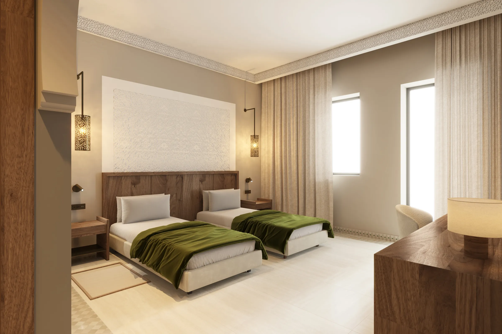
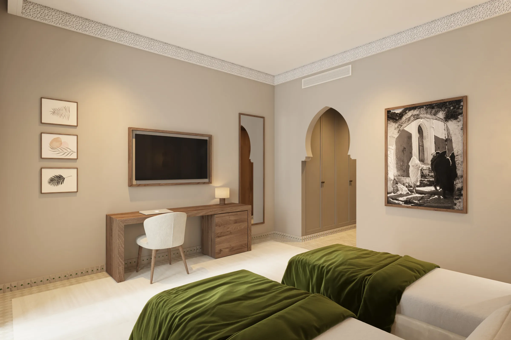
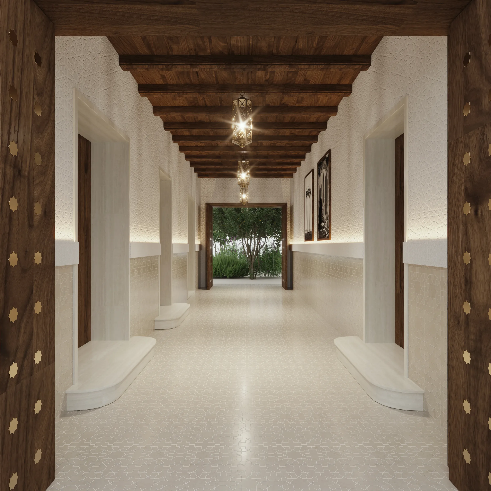

Pamur
- Mission
- Réhabilitation, Architecture d'intérieur, Suivi de chantier
- Lieu
- Médina, Marrakech
- Projet
- Livré, 2022
- Sup. terrain
- 310 m²
- Surface construite
- > 420 m²







Un projet, une question ?
ochralab@gmail.com